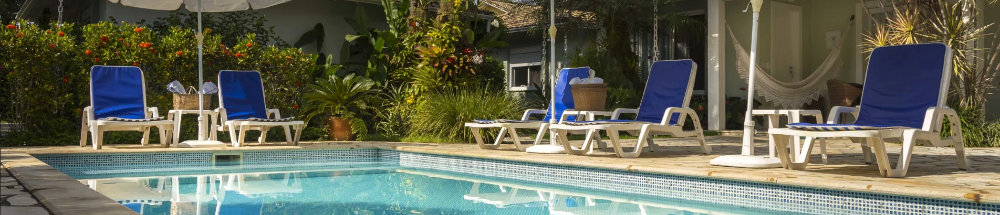

Única preocupação é você relaxar.
Acomodações
A pousada oferece acomodações confortáveis para toda a sua família. Suites com acomodações para até 08 pessoas, café da manhã incluso na diária, e estacionamento no local. Pets de pequeno porte são muito bem vindos!
Serviços
Café da Manhã
Em nosso café da manhã servido diariamente, de 8h as 10h30, nossos hóspedes podem desfrutar de uma variedade de pães e de bolos.
Piscina
Da piscina você pode ouvir o barulho do riacho que passa ao lado da pousada e o som dos pássaros cantando. Piscinas com aquecedores e espasoças.
Bangalô
Rústica e aconchegante. Em total harmonia com a natureza, em um cenário paradisíaco, proporcionamos toda comodidade, estrutura e serviços de um hotel.
Conhecer os Serviços
Galeria
O bom astral da Pousada Maris Paraty se completa com a boa música que você mesmo pode escolher. A Pousada possui um lindo jardim em frente aos quartos com uma varanda privativa para cada bangalô com redes e espreguiçadeira.